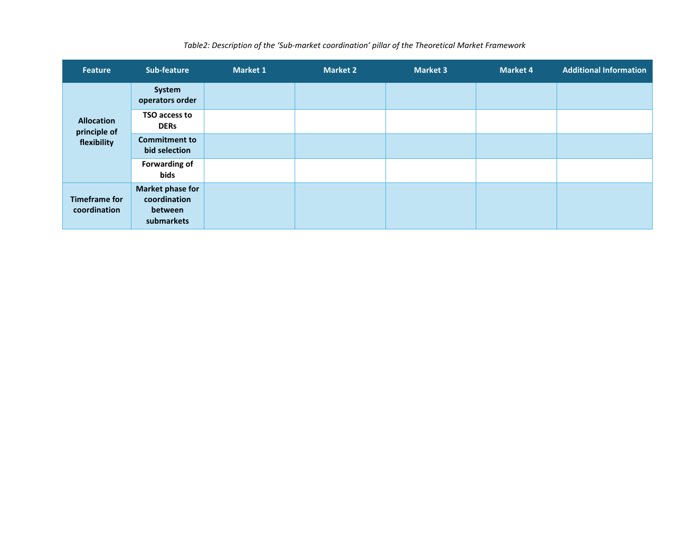

Source-grounded tutorial
How to think about this pillar
This pillar describes how sub-markets interact when they draw on the same flexibility resources. It makes priority, access, commitment, bid forwarding and coordination timing explicit.
The logic of interaction
Defines how interacting sub-markets share flexibility and coordinate decisions.
Jump to feedbackSource-grounded tutorial
This pillar describes how sub-markets interact when they draw on the same flexibility resources. It makes priority, access, commitment, bid forwarding and coordination timing explicit.

Market-design intelligence
Use the same Market 1-4 labels as in Pillar 1 and describe how relevant sub-markets interact.
Record whether the TSO or DSO has priority, exclusivity, or neither.
State whether bid selection is formal or conditional and whether the TSO can access DERs.
Record whether eligible unused bids can move to another market.
State whether coordination occurs during prequalification, procurement, activation, measurement or settlement.
Theoretical Market Framework feature map
Use this table as both a terminology reference and a data-entry guide for Sub-market Coordination.
| Feature | Sub-feature / decision | Data type | Definition | How to read the choice |
|---|---|---|---|---|
| Allocation principle of flexibility | System operators order | Categorical: TSO/DSO priority, TSO/DSO exclusivity, none | Rule determining which system operator gets first or exclusive access to shared flexibility. | Select the access order for the considered interaction. |
| Allocation principle of flexibility | TSO access to DERs | Boolean / N/A | Whether the TSO can access distribution-connected flexibility in the arrangement. | Record yes, no or not applicable. |
| Allocation principle of flexibility | Commitment to bid selection | Categorical: formal / conditional / N/A | Whether a first-stage bid selection is binding or remains provisional pending later coordination. | Record the commitment rule. |
| Allocation principle of flexibility | Forwarding of bids | Boolean / N/A + note | Transfer of eligible unused bids from one market to another, possibly after processing. | Record whether forwarding is allowed and describe any processing. |
| Timeframe for coordination | Market phase for coordination between submarkets | Multi-select: prequalification / procurement / activation / measurement / settlement | Market phase(s) in which coordination between the sub-markets occurs. | Select all phases where coordination is applied. |
Use the same Market 1-4 labels as Pillar 1. Record coordination rules for the relevant interactions and explain pairwise conditions in Additional Information.

Expert feedback
Does this pillar capture how shared flexibility is allocated across interacting markets without double use or conflicting activation?
Open the discussion to comment here through the project GitHub Q&A thread. Any one of the three feedback actions completes this pillar in the review progress.